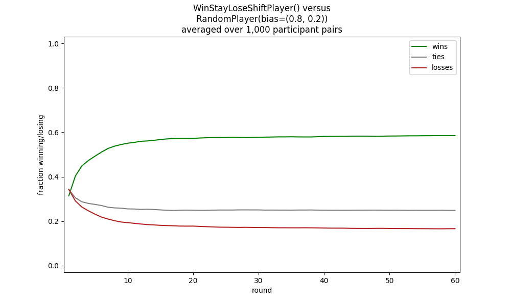
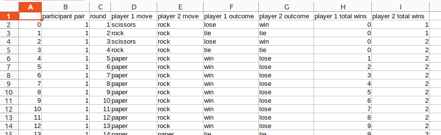
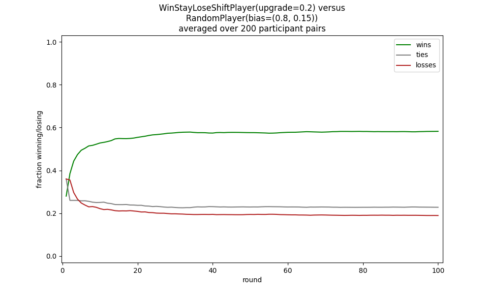

Rock paper scissors game example¶
Here is described a Python implementation of the Rock, Paper, Scissors game [1], and how to connect a variety of models to it. Rock, Paper, Scissors is a game where two players compete, each choosing one of three possible moves. It is most interesting when iterated many times, as players may possibly be able to learn about their opponent’s biases and exploit them. Note that there are three outcomes possible in any round, two where one player wins and the other loses, and a third where the players tie. This can have implications for strategies, as, for example, maximizing a player’s numbers wins is not the same as minimizing that player’s number of loses. The game has been extensively studied.
Click here to download a zipped archive for the various files of code
described in this section, along with a requirements.txt file. The recommended way of running these
examples yourself is to create and activate a virtual environment using venv or conda, doing pip install -r requirements.txt in
it, and then in it running Python on the desired file.
The implementation of the game, which is completely independent of PyIBL, is in rps-game.py.
1# Copyright 2024 Carnegie Mellon University
2
3"""
4A framework for placing the Rock, Paper, Scissors game. Players instances of subclasses
5of RPSPlayer.
6
7Also included is a command line interface to run pairs of players, typically of two
8different types, against one another for a given number of rounds and a number of
9virtual participant pairs. The players are described as a module name, dot, and a
10constructor name, optionally followed by parenthesized arguments to the constructor. For
11example,
12 python rps_game.py wsls.WinStayLoseShiftPlayer "rand.RandomPlayer(bias=(0.8, 0.1))"
13"""
14
15import click
16from importlib import import_module
17import matplotlib.pyplot as plt
18from os import listdir
19from os.path import splitext
20import pandas as pd
21from re import fullmatch
22import sys
23from tqdm import trange
24
25
26MOVES = ["rock", "paper", "scissors"]
27RESULTS = ["tie", "win", "lose"]
28
29
30class RPSPlayer:
31 """
32 Subclass this abstract class to create a kind of player. The move() method must
33 be overridden to respond with one of the possible MOVES. If desired, the result()
34 method may also be overridden to inform the player of the result of the most recent
35 round of play. Similarly the reset() method may be overridden; it is typically
36 called between virtual games to reset the virtual participant if that participant
37 retains state between rounds.
38 """
39
40 def __init__(self):
41 self._awaiting_result = False
42
43 def reset(self):
44 """If there's anything to do this method must be overridden"""
45 pass
46
47 def do_reset(self):
48 self.reset()
49 self._awaiting_result = False
50
51 def move(self):
52 """Must be overriden by a subclass"""
53 raise NotImplementedError("The move() method must be overridden")
54
55 def do_move(self):
56 if self._awaiting_result:
57 raise RuntimeError("Cannot make a move until the previous round has been resolved")
58 m = self.move()
59 self._awaiting_result = True
60 return m
61
62 def result(self, opponent_move, outcome, wins, ties, losses):
63 """If there's anything to do this method must be overridden"""
64 pass
65
66 def do_result(self, opponent_move, outcome, wins, ties, losses):
67 if not self._awaiting_result:
68 return
69 self.result(opponent_move, outcome, wins, ties, losses)
70 self._awaiting_result = False
71
72
73
74class RPSGame:
75 """
76 Plays one or more games between two player objects, each of a given number of rounds.
77 The player objects are reset between games. Returns a Pandas DataFrame collecting
78 the results of all the rounds of all the games.
79 """
80
81 def __init__(self, player1, player2, rounds=1, participants=1):
82 self._players = [player1, player2]
83 self._rounds = rounds
84 self._participants = participants
85
86 def play(self, show_progress=False):
87 results = []
88 for participant in (trange(1, self._participants + 1) if show_progress
89 else range(1, self._participants + 1)):
90 wins = [0, 0]
91 for p in self._players:
92 p.reset()
93 for round in range(1, self._rounds + 1):
94 moves = [p.do_move() for p in self._players]
95 outcomes = [RESULTS[(MOVES.index(moves[i]) - MOVES.index(moves[(i + 1) % 2])) % 3]
96 for i in range(2)]
97 for i in range(2):
98 if outcomes[i] == "win":
99 wins[i] += 1
100 for p, om, oc, win, loss in zip(self._players,
101 reversed(moves),
102 outcomes,
103 wins,
104 reversed(wins)):
105 p.do_result(om, oc, win, round - (win + loss), loss)
106 results.append([participant, round,
107 moves[0], moves[1],
108 outcomes[0], outcomes[1],
109 wins[0], wins[1]])
110 return pd.DataFrame(results,
111 columns=("participant pair,round,"
112 "player 1 move,player 2 move,"
113 "player 1 outcome,player 2 outcome,"
114 "player 1 total wins,player 2 total wins").split(","))
115
116
117def plot_wins_losses(df, player_no=1, title=None, file=None):
118 if file:
119 df.to_csv(file)
120 other_player = 1 if player_no==2 else 2
121 df["wins"] = df.apply(lambda x: x[f"player {player_no} total wins"] / x["round"], axis=1)
122 df["losses"] = df.apply(lambda x: x[f"player {other_player} total wins"] / x["round"], axis=1)
123 df["ties"] = 1 - (df["wins"] + df["losses"])
124 rounds = max(df["round"])
125 xmargin = rounds / 80
126 df.groupby("round")[["wins", "ties", "losses"]].mean().plot(figsize=(10, 6),
127 color=("green", "gray", "firebrick"),
128 ylim=(-0.03, 1.03),
129 title=title,
130 xlabel="round",
131 xlim=(1 - xmargin, rounds + xmargin),
132 xticks=(range(1, rounds+1) if rounds < 8
133 else None),
134 ylabel="fraction winning/losing")
135 plt.show()
136
137
138def make_player(s):
139 if m := fullmatch(r"(\w+)\.(\w+)(\(.*\))?", s):
140 mname = m.group(1)
141 cname = m.group(2)
142 args = m.group(3)
143 module = import_module(mname)
144 c = cname + (args or "()")
145 return eval(f"module.{c}"), c
146 else:
147 raise RuntimeError(f"Don't know how to create player {s}")
148
149@click.command()
150@click.option("--rounds", "-r", type=int, default=100,
151 help="The number of rounds to play")
152@click.option("--participants", "-p", type=int, default=200,
153 help="The number of participant pairs to play")
154@click.option("--file", "-f", type=str, default=None,
155 help="A CSV file into which to write the results")
156@click.argument("player1")
157@click.argument("player2")
158def main(player1, player2, rounds=1, participants=1, file=None, show_progress=None):
159 if file and not splitext(file)[1]:
160 file += ".csv"
161 if show_progress is None:
162 show_progress = not player1.startswith("human") and not player2.startswith("human")
163 p1, n1 = make_player(player1)
164 p2, n2 = make_player(player2)
165 plot_wins_losses(RPSGame(p1, p2, rounds, participants).play(show_progress),
166 title=f"{n1} versus\n{n2}\n(averaged over {participants} participants)",
167 file=file)
168
169
170if __name__ == '__main__':
171 main()
This defines a class, RPSPlayer, which is
subclassed to implement various player types.
There is a further RPSGame class which is constructed with two players which are
subclasses of RPSPlayer;
the two players are typically, though not necessarily, of different subclasses.
The RPSGame object calls the players repeatedly for a number of rounds,
typically for several or many virtual participant pairs, and gathers the results,
returning them as a Pandas DataFrame
The rps_game.py file also contains a function, plot_winsₗosses that takes such a DataFrame and plots
the wins and losses of the first player against the second using the Matplotlib library.
When creating a subclass of RPSPlayer
its move() method must be overridden to return one of the string values "rock", "paper" or "scissors".
Usually the method result() is also overridden, allowing display or capture
of the results of a round of the game, though for some very simple models this may not be necessary.
Similarly the reset() method may be overridden if the model is retaining state carried from round to round that
may need to be reset between virtual participants.
A simple human player is defined with the subclass HumanPlayer in human.py;
note that the HuamnPlayer overrides move() to request a move from the player and returns it; and
overrides result() to display the results:
1# Copyright 2024 Carnegie Mellon University
2
3"""
4An RPSPlayer subclass which simply solicits moves from a human player using the terminal,
5and also prints to the terminal the results of each round of play.
6"""
7
8from rps_game import RPSPlayer, MOVES
9import sys
10
11def read_move():
12 while True:
13 print("Enter your next move: r(ock), p(aper) or s(cissors): ", end="", flush=True)
14 s = sys.stdin.readline().strip()
15 if s:
16 for m in MOVES:
17 if m.startswith(s):
18 return m
19
20
21class HumanPlayer(RPSPlayer):
22
23 def move(self):
24 self._last_move = read_move()
25 return self._last_move
26
27 def result(self, opponent_move, outcome, wins, ties, losses):
28 print(f"You played {self._last_move}, your opponent played {opponent_move}, you {outcome} "
29 f"(so far you have won {wins}, tied {ties} and lost {losses})")
It would also be relatively straightforward to create a web-based interface as an RPSPlayer, which
would allow a human-human game to be played.
In addition to this human player, a number of models are implemented, several using PyIBL, and are described in subsequent subsections.
Finally, rps-game.py implements a command line interface, creating an RPSGame with players of designated types,
playing potentially many rounds with many virtual pairs of those players, and then plotting the results of these games.
Because running large number of participants can require long periods of time, particularly for some kinds of models and/or
large numbers of rounds, a progress indicator is usually shown while results are being computed.
For example, to run 1,000 pairs of WinStayLoseShiftPlayer (described further below) against a RandoomPlayer (also described further below),
the latter biased to return rock 80% of the time, paper 20%, and scissors never, with each pair playing 60 rounds, you could call:
python rps_game.py --participants=1000 --rounds=60 wsls.WinStayLoseShiftPlayer "rand.RandomPlayer(bias=(0.8, 0.2))"
This will result in display of a graph much like the following, though it may differ slightly in detail since both models are stochastic.
{kind=link}
By supplying a --file argument you can also save the resulting DataFrame describing the full results
into a CSV file. For example, if we add --file=results.csv the first few lines of the resulting file will look something
like the following, though again differing in detail since the models are stochastic.
,participant pair,round,player 1 move,player 2 move,player 1 outcome,player 2 outcome,player 1 total wins,player 2 total wins 0,1,1,scissors,rock,lose,win,0,1 1,1,2,rock,rock,tie,tie,0,1 2,1,3,scissors,rock,lose,win,0,2 3,1,4,rock,rock,tie,tie,0,2 4,1,5,paper,rock,win,lose,1,2 5,1,6,paper,rock,win,lose,2,2 6,1,7,paper,rock,win,lose,3,2 7,1,8,paper,rock,win,lose,4,2 8,1,9,paper,rock,win,lose,5,2 9,1,10,paper,rock,win,lose,6,2 10,1,11,paper,rock,win,lose,7,2 11,1,12,paper,rock,win,lose,8,2 12,1,13,paper,rock,win,lose,9,2 13,1,14,paper,paper,tie,tie,9,2 …
Or, when imported into a spreadsheet:
{kind=link}
Random model¶
Perhaps the simplest model, RandomPlayer in rand.py, simply chooses a move at random.
1# Copyright 2024 Carnegie Mellon University
2
3"""
4A player who, by default, chooses moves uniformly at random. If bias is set it should
5be a 2-tuple, the probabilities of rock or paper being chosen, and a correspondingly
6skewed distribution is then used for picking moves at random.
7"""
8
9import random
10from rps_game import RPSPlayer, MOVES
11
12class RandomPlayer(RPSPlayer):
13
14 def __init__(self, bias=None):
15 super().__init__()
16 if bias:
17 self._rock, self._paper = bias
18 if not (self._rock >= 0 and self._paper >= 0
19 and (self._rock + self._paper) <= 1):
20 raise RuntimError(f"bias ({bias}) should be a tuple of the probabilities that rock and paper are chosen")
21 else:
22 self._rock = None
23
24 def move(self):
25 if not self._rock:
26 return random.choice(MOVES)
27 r = random.random()
28 if r <= self._rock:
29 return "rock"
30 elif r <= self._rock + self._paper:
31 return "paper"
32 else:
33 return "scissors"
By default it uses a uniform random distribution to choose between the three moves. While this is “optimal” play in the sense that no other player can exploit it to win more than one third of the time, neither can the random player exploit other players’ biases.
If desired the distribution used to choose moves may be skewed by setting the bias parameter, which should
be a 2-tuple of the probabilities of choosing rock and paper. for example, to choose rock 80% of the time,
paper never, and scissors 20% of the time, RandomPlayer(bias=(0.8, 0).
Win stay lose shift model¶
A strategy that has been widely studied is Win Stay, Lose Shift, which is demonstrated here.
1# Copyright 2024 Carnegie Mellon University
2
3"""
4A player using a win stay, lose shift strategy. After a loss the next move is an upgrade
5of the previous one with probability upgrade, and otherwise a downgrade. The initial move
6is chosen randomly. Note that with the default upgrade value of 0.5 the shift after a
7is simply to a uniformly random choice between the other two moves.
8"""
9
10import random
11from rps_game import RPSPlayer, MOVES
12
13class WinStayLoseShiftPlayer(RPSPlayer):
14
15 def __init__(self, upgrade=0.5):
16 super().__init__()
17 if upgrade < 0 or upgrade > 1:
18 raise RuntimeError(f"the upgrade parameter ({updagrede})should be a probability, non-negative but less than one")
19 self._upgrade = upgrade
20 self.reset()
21
22 def reset(self):
23 self._last_move = None
24 self._last_outcome = None
25
26 def move(self):
27 if self._last_outcome == "win":
28 mv = self._last_move
29 elif not self._last_outcome:
30 mv = random.choice(MOVES)
31 elif random.random() < self._upgrade:
32 # upgrade
33 mv = MOVES[(MOVES.index(self._last_move) + 1) % 3]
34 else:
35 # downgrade
36 mv = MOVES[(MOVES.index(self._last_move) - 1) % 3]
37 self._last_move = mv
38 return mv
39
40 def result(self, opponent_move, outcome, wins, ties, losses):
41 self._last_outcome = outcome
When shifting after a loss a choice needs to be made between the two other possible moves. By default
this choice is made uniformly at random. However an upgrade or downgrade can be made preferred
by setting the upgrade parameter to the probability that after a loss the next move is an upgrade
from this player’s previous move. Note that strategies where a loss is always followed by an upgrade
or a downgrade can easily be used simply by setting upgrade to 1 or 0, respectively.
For example, to play a win stay, lose shift strategy, with a loss resulting in a 20% chance of an upgrade and an 80% chance of a downgrade, against a biased random strategy favoring rock 80% of the time we could do:
python rps_game.py "wsls.WinStayLoseShiftPlayer(upgrade=0.2)" "rand.RandomPlayer(bias=(0.8, 0.15))"
This results in a plot similar to the following.
{kind=link}
IBL models¶
Neither of the above models have any dependence upon PyIBL, but we can easily create PyIBL models, too, which allow us to
see how various IBL models can fare playing Rock, Paper, Scissors. Three such models are in ibl.py.
1# Copyright 2024 Carnegie Mellon University
2
3from itertools import repeat
4from pyibl import Agent
5from rps_game import RPSPlayer, MOVES, RESULTS
6
7
8"""
9Several different IBL models for playing Rock, Paper, Scissors.
10"""
11
12class IBLPlayer(RPSPlayer):
13 """
14 A base class for a players using a single PyIBL Agent. The attributes argument is
15 passed to the Agent constructor. The payoffs argument is a 3-tuple of the payoffs
16 for the possible results in the order lose, tie, win.
17 """
18
19 def __init__(self, attributes=None, payoffs=(-1, 0, 1), kwd={}):
20 super().__init__()
21 self._agent = Agent(attributes)
22 for a in ("noise", "decay", "temperature"):
23 if v := kwd.get(a):
24 setattr(self._agent, a, v)
25 # The _payoffs in the object are stored in a different order than the human
26 # friendly order used for the parameter, instead matching he order in which
27 # they appear in rps_game.RESULTS: tie, win, lose
28 self._payoffs = payoffs[1:] + payoffs[:1]
29 self._initial_payoff = 1.2 * max(payoffs)
30
31 def reset(self):
32 self._agent.reset(self._agent.default_utility in (None, False))
33
34 def respond(self, outcome):
35 self._agent.respond(self._payoffs[RESULTS.index(outcome)])
36
37
38class BasicIBLPlayer(IBLPlayer):
39 """
40 A simplistic IBL model that simply notes how well we do for each possible move. While
41 this might work against a not very smart opponent, say one that almost always picks
42 rock, against players that are learning and responding from the history of our moves
43 it is unlike to do well.
44 """
45
46 def __init__(self, **kwd):
47 super().__init__(kwd)
48 self._agent.default_utility = self._initial_payoff
49 self.reset()
50
51 def reset(self):
52 super().reset()
53 self._agent.reset()
54
55 def move(self):
56 return self._agent.choose(MOVES)
57
58 def result(self, opponent_move, outcome, wins, ties, losses):
59 self.respond(outcome)
60
61
62class ContextualIBLPlayer(IBLPlayer):
63 """
64 A slightly smarter IBL model that chooses its move based on what move our opponent
65 made in the last round.
66 """
67
68 def __init__(self, **kwd):
69 super().__init__(["move", "opponent_previous_mode"], kwd=kwd)
70 self._agent.default_utility = self._initial_payoff
71 self.reset()
72
73 def reset(self):
74 super().reset()
75 self._opponent_previous = None
76
77 def move(self):
78 return self._agent.choose(zip(MOVES, repeat(self._opponent_previous)))[0]
79
80 def result(self, opponent_move, outcome, wins, ties, losses):
81 self.respond(outcome)
82 self._opponent_previous = opponent_move
83
84
85NONE_MATCH = 0.5
86
87def move_sim(x, y):
88 if x == y:
89 return 1
90 elif x is None or y is None:
91 return NONE_MATCH
92 else:
93 return 0
94
95def shift(element, list):
96 # Adds element to the front of the list, shifting the existing elements towards the
97 # back, with the oldest element falling off the end of the list.
98 list.pop()
99 list.insert(0, element)
100
101
102class LagIBLPlayer(IBLPlayer):
103 """
104 An IBL model that keeps track of the past N (= log) moves of both out opponent and
105 our own move, thus capturing how our opponent responds to our moves. Because there
106 are so many possibilities we use partial matching with not yet seen possibilities
107 viewed as half as salient as those that match perfectly.
108 """
109
110 def __init__(self, lag=1, mismatch_penalty=1, **kwd):
111 self._lag = lag
112 move_attrs = (["opp-" + str(i) for i in range(1, lag + 1)] +
113 ["own-" + str(i) for i in range(1, lag + 1)])
114 super().__init__(["move"] + move_attrs, kwd=kwd)
115 self._agent.mismatch_penalty = mismatch_penalty
116 self._agent.similarity(move_attrs, move_sim)
117 self.reset()
118 self._agent.populate(self.choices(), self._initial_payoff)
119
120 def reset(self):
121 self._opp_prev = [None] * self._lag
122 self._own_prev = [None] * self._lag
123
124 def choices(self):
125 return [[move] + lst
126 for move, lst in zip(MOVES, repeat(self._opp_prev + self._own_prev))]
127
128 def move(self):
129 self._move = self._agent.choose(self.choices())[0]
130 return self._move
131
132 def result(self, opponent_move, outcome, wins, ties, losses):
133 self.respond(outcome)
134 shift(opponent_move, self._opp_prev)
135 shift(self._move, self._own_prev)
All three models use one PyIBL Agent for each player, and the code managing that agent is shared by having each model
a subclass of an base IBLPlayer class. What attributes the created Agent has is set with the attributes argument
to the IBLPlayer constructor. When making such an IBL model we must decide what the utilities are of
winning, losing or tying a game. By default IBLPlayer sets these to 1 point for a win, 0 points for a tie, and -1 points
for a loss. These values can be adjusted with the payoffs argument to the constructor. The default prefers winning, but
views tying as preferable to losing; but for some investigations it may be appropriate to aim solely at maximizing wins, or
minimizing losses, so payoffs something like (0, 0, 1) or (0, 1, 1), respectively, might be appropriate.
The IBLPlayer class also makes available to its subclasses a suitable value for prepopulated instances and the like for encouraging
exploration, _initial_payoff, based on these possible payoff values. In addition, the usual IBL parameters (noise, decay and blending temperature)
can also be modified simply by change parameters passed to the constructor.
The simplest IBL model, BasicIBLPlayer, simply bases its choice on the history of results from having made each move, with no concern for
the moves made in the preceding rounds. This can work against unsophisticated opponents, such as one that favors rock 60% of the time:
python rps_game.py ibl.BasicIBLPlayer "rand.RandomPlayer(bias=(0.6, 0.2))"
{kind=link}
But this basic model is readily defeated by a more sophisticated opponent, such as one employing a win stay, lose shift strategy:
python rps_game.py ibl.BasicIBLPlayer "wsls.WinStayLoseShiftPlayer(upgrade=1)"
{kind=link}
A smarter model can use a PyIBL attribute to base its move selection on the opponents previous move. This does better against the wind stay, stay loses shift opponent, above:
python rps_game.py ibl.ContextualIBLPlayer "wsls.WinStayLoseShiftPlayer(upgrade=1)"
{kind=link}
But if the win stay, lose shift opponent randomly selects what it does on a loss, the ContextualIBLPlayer will fare poorly against it:
python rps_game.py ibl.ContextualIBLPlayer "wsls.WinStayLoseShiftPlayer(upgrade=0.5)"
{kind=link}
To improve this IBL model further we want to have it capture not just the experience of what opponent moves most likely follow its own moves,
but how it responds to our moves. In a LagIBLModel we capture the results based on both players’ past moves.
By default it only uses the immediately preceding moves of both players, but by setting the lag parameter this can be increased to
multiple past moves.
A full set of results for all pairs of possible moves is large, especially if we consider multiple past moves, we use partial matching
to treat unseen results as of some value, but not as much as one’s we’ve really seen. The similarly function, sim(), returns 0.5,
for attributes that do not match instances we’ve seen, allowing instances only some of whose attributes match to still contributed to
the blended value, albeit with less weight than those that have more matching attributes.
With a lag of only one, matching just the preceding moves of both places, this model handily dominates the win stay, lose shift strategy even with an evenly distributed random selection of upgrades/downgraes:
python rps_game.py ibl.LagIBLPlayer "wsls.WinStayLoseShiftPlayer(upgrade=0.5)"
{kind=link}
Because most of these models, both the conventional ones and the IBL ones, have various parameters that can be modified it is easy to compare the results of a variety of differing strategies.